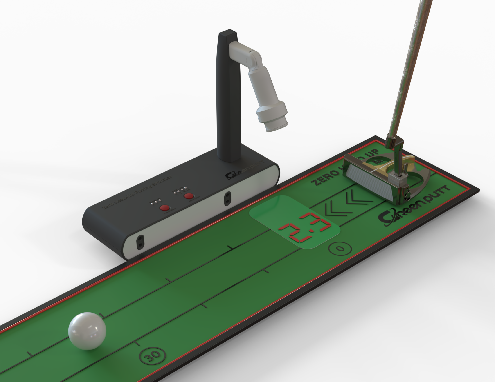
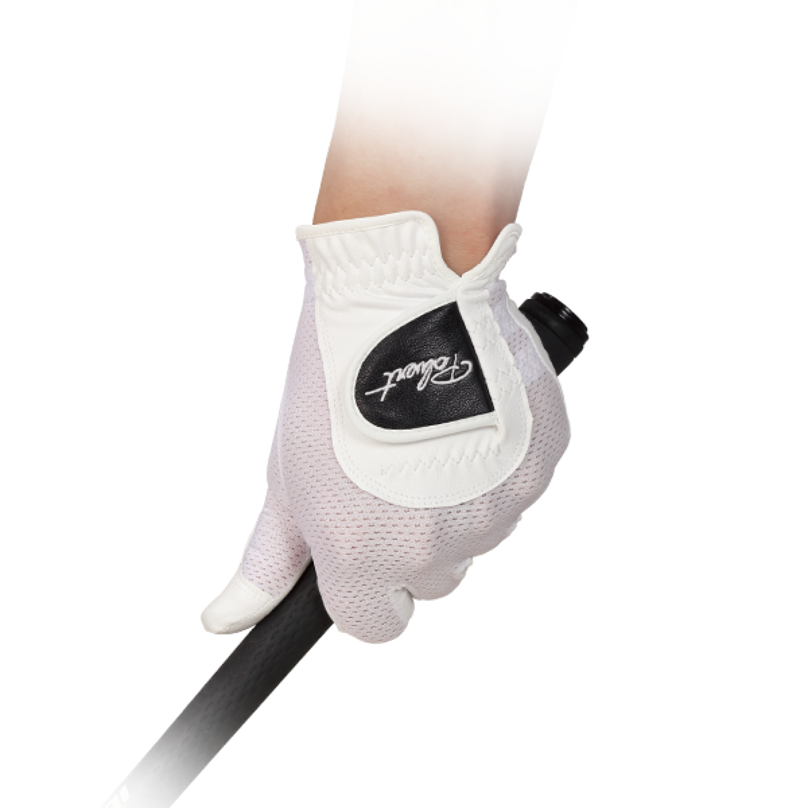

Stroke
시선은 공과 퍼터 헤드에 머무르고, 결과 확인 욕구는 아직 움직이지 않습니다.

Premium Putting Film
공 가까이 뜨는 거리 피드백. 고개를 들지 않는 퍼팅 루틴. GreenPutt는 연습의 시선을 다시 아래로 돌립니다.
Zero Head-Up Film
GreenPutt의 핵심은 공이 출발한 뒤 멀리 있는 결과를 보러 가는 대신, 공 근처에서 퍼팅 거리 피드백을 확인하도록 만드는 것입니다. 스크롤은 이 루틴이 어떻게 바뀌는지 한 장면씩 보여줍니다.
정량적인 거리 데이터를 원한 응답자 비율. 최종 공개 전 문구는 원본 자료 기준으로 재검토합니다.
시선은 공과 퍼터 헤드에 머무르고, 결과 확인 욕구는 아직 움직이지 않습니다.
초기 볼 스피드와 거리 감각을 읽어 수치화할 수 있는 피드백으로 바꿉니다.
숫자는 멀리 있는 화면이 아니라 공 가까운 바닥과 매트 위에 남습니다.
고개를 들지 않는 루틴이 반복되며 거리감과 스트로크 리듬을 함께 쌓습니다.
GreenPutt System
Core System
공 가까이에 거리 피드백을 남겨 시선이 위로 튀지 않도록 돕는 GreenPutt의 중심 장치.
Product Focus
첫인상은 큰 캠페인으로 열고, 이후 섹션은 제품의 각도와 기능을 가까이 보여줍니다. 그래서 GreenPutt는 단순한 쇼핑몰이 아니라 퍼팅 시스템 브랜드로 보입니다.

GreenPutt StorePick
GreenPutt의 핵심 발명품은 제로 헤드업 퍼팅 시스템입니다. Polvert는 그 흐름 안에서 먼저 판매 가능한 골프 장갑으로, 색상과 사이즈 선택 후 아임웹 구매 플로우로 연결됩니다.
Polvert 상품 보기Imweb Bridge